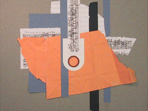

OpenMusic Documentation
OpenMusic Documentation
Navigation : | page suivante
Attention, votre navigateur ne supporte pas le javascript ou celui-ci à été désactivé. Certaines fonctionnalités de ce guide sont restreintes.
| | | | | | ---------------------------------------------------------------------------------------------------------------------- | | | |  | |
OpenMusic (OM) is a visual programming language designed for music composition. Visual programs (called "patches") can be created by connecting graphical modules together, corresponding to musical objects or data processing functions.
OM offers you a complete freedom in programming, including text programming via the Common Lisp language. A large numbers of specialized projects and libraries are available for specific applications (mathematical tools, sound processing and synthesis, etc.)
This documentation is divided in two main parts :
- A complete user manual describing the use and features of the evironment
- A "quickstart" tutorial with video demonstrations
OM Libraries
Note that many tools available in OpenMusic are part of separate libraries, which are not documented in this manual.
Références :
Plan :
- OpenMusic Documentation
- OM 6.6 User Manual
- OpenMusic QuickStart
Navigation : | page suivante
A propos...(c) Ircam - Centre Pompidou